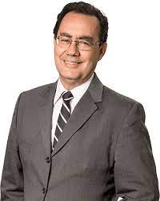
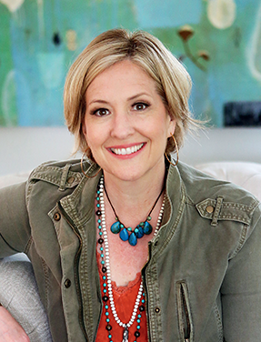

Daniel Goleman (7 de março de 1946) é um jornalista científico dos Estados Unidos. Por doze anos, escreveu para o The New York Times, principalmente sobre avanços nos estudos do cérebro e das ciências comportamentais.
Escritor de renome internacional, psicólogo, jornalista da ciência e consultante incorporado. Ele é filho de um casal de professores universitários de Stockton, Califórnia, onde o seu pai ensinava literatura mundial no San Joaquin Delta College, enquanto sua mãe ensinava no departamento social, que é agora a University of the Pacific. Goleman recebeu o seu doutoramento em Harvard, onde também dava aulas.

Augusto Cury (1958) é um médico psiquiatra, professor e escritor brasileiro, famoso pelos seus livros na área de psicologia. É o autor da Teoria da Inteligência Multifocal. Augusto Cury (1958) nasceu em Colina, São Paulo, no dia 2 de outubro de 1958. Formou-se em Medicina pela Faculdade de São José do Rio Preto. Dedicou-se durante 17 anos à pesquisa sobre as dinâmicas da emoção. É o criador da Teoria da inteligência multifocal, que visa explicar o funcionamento da mente humana e as formas de como devemos fazer para exercer maior domínio sobre a nossa vida por meio da inteligência e pensamento.
As tensões e angústias do dia a dia são temas constantes em suas conferência e seus livros. Os problemas derivados do trabalho excessivo e as exigências do mundo moderno também são assuntos constantes nas explanações.
Publicou “Inteligência Multifocal” (1999), onde apresenta mais de 30 elementos essenciais para a formação da inteligência humana, tais como o processo de interpretação, a democracia e o autoritarismo das ideias e o fluxo vital da energia psíquica.
Cury é membro de honra do Instituto da Inteligência, de Portugal, diretor da Academia de Inteligência - instituo que oferece treinamento aos psicólogos e educadores. É Doutor Honoris Causa da UNIFIL- Centro Universitário Filadélfia, em Londrina, no Paraná.
Augusto Cury publicou vários livros, entre eles: “Revolucione Sua Qualidade de Vida“ (2002), “Dez Leis para Ser Feliz” (2003), “Nunca Desista de Seus Sonhos” (2004), Coleção “Análise da Inteligência de Cristo” (2006), “Os Segredos do Pai-Nosso” (2007) e “De Gênio e Louco Todo Mundo Tem um Pouco” (2009).
Augusto Cury foi considerado pelo jornal Folha de São Paulo como o autor brasileiro mais lido da década de 2000.
Brené Brown

A Dra. Brené Brown, professora e pesquisadora na Universidade de Houston, estuda há duas décadas a coragem, a vulnerabilidade, a vergonha e a empatia. Escreveu os livros A coragem de ser imperfeito e Mais forte do que nunca, que ocuparam o primeiro lugar na lista do The New York Times, e Eu achava que isso só acontecia comigo, todos lançados pela Editora Sextante.
Brené também é fundadora e CEO da organização Brave Leaders, Inc., que leva a equipes, líderes, empreendedores e promotores de mudanças programas baseados em evidências para fomentar a coragem.
Sua palestra “O poder da vulnerabilidade” é uma das mais vistas de toda a série de conferências TED, tendo sido assistida por mais de 45 milhões de pessoas.